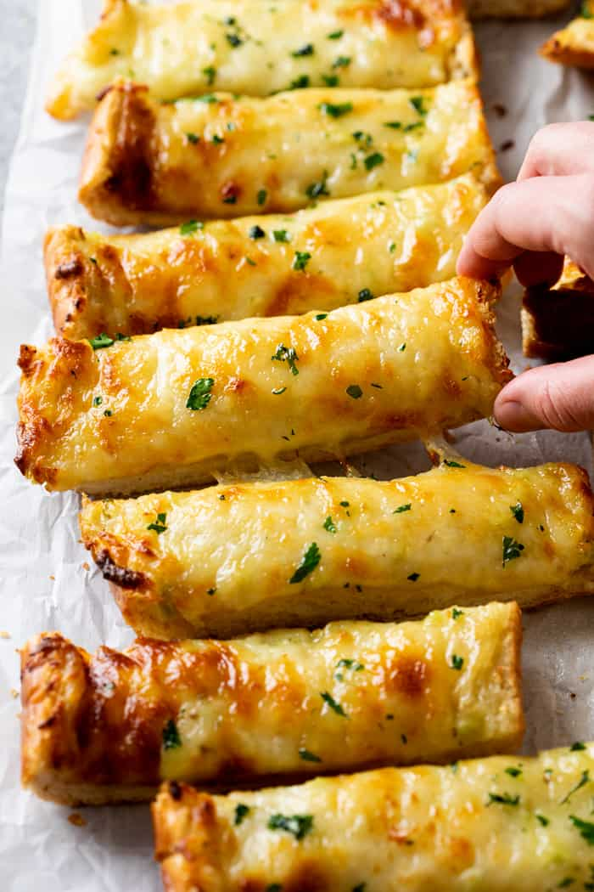

Garlic Bread with Cheese

Easy Garlic Bread with Cheese Recipe
Easy peazy garlic bread with cheese that will smack your taste buds in the mouth.
Ingredients
- 1 Baguette
- 1 stick of Salted Butter
- 6 cloves of Fresh Garlic
- 1/4 cup Parmesan Cheese
- 1/4 cup Italian Salad Dressing (Option)
- Fresh Parsley
Instructions
- Preheat oven to 350°.
- Combine the butter, garlic, Italian salad dressing, and 1 cup of the Mozzarella cheese in a large bowl until well incorporated.
- Slice the French bread in half lengthwise and spread the top of each half with equal amounts of garlic butter.
- Place the halves on a baking sheet, butter side up. Top with Parmesan cheese, then with remaining Mozzarella.
- Bake for 10 minutes, until the cheese is melted.
- Increase heat to 450° and bake for up to 8 additional minutes, until the top begins to brown. Keep an eye on it during this time.
- Remove and cut into 1-inch slices. Garnish with parsley and serve with pink sauce pasta, soup, or lasagna.